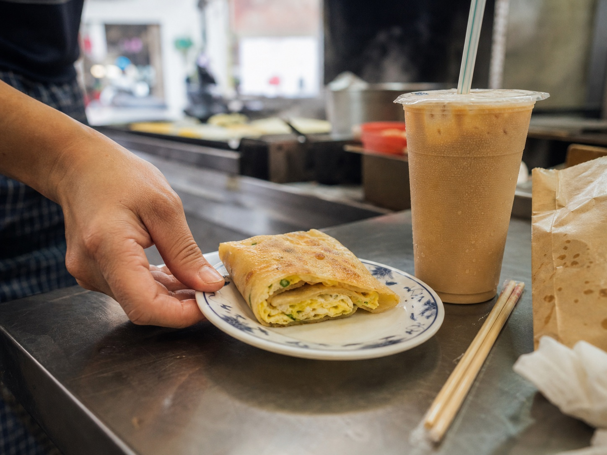
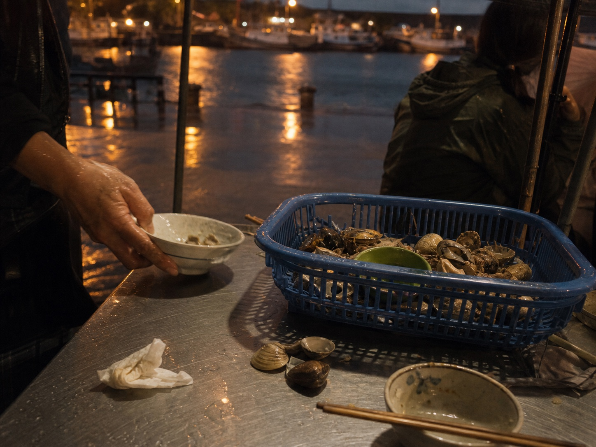

從清晨市場到老屋茶席，春天的聚場先從一份熱早餐和一杯茶開始。
台灣相聚文化平台
聚場台灣
Gather Taiwan
相招，聚一場。
有些台灣記憶，是從一張桌開始的。早餐店的鐵板聲、港邊的海風、中秋的炭香、熱炒桌的碰杯聲，都讓人有理由坐下來，和熟悉或剛認識的人一起留下故事。

氣氛影像
市場早餐春茶席港邊晚餐月光開烤城市野餐地方辦桌冬季鍋物廟會相聚
市場早餐春茶席港邊晚餐月光開烤城市野餐地方辦桌冬季鍋物廟會相聚
相聚，是台灣人最熟悉的文化。
People / Place / Culture
聚場台灣
讓一桌人的情感，
成為被記得的台灣故事。
聚場台灣從台灣人熟悉的飯桌、街口與節氣出發，做出能參與、能留下故事的相聚體驗。
這些熱情、款待與人情味，本來就存在於生活裡。Gather Taiwan 想把它們好好留下來，讓品牌、地方、創作者、店家與參與者，都能在同一張桌上找到自己的角色。
一年十二個月
一年十二個月，
台灣都有相聚的理由。
春天吃早餐、夏夜靠海風、中秋一起烤、冬天圍著一鍋湯。每一個季節，都有一種讓人願意出門、坐下、說話的味道。
節令食物、夜市燈光與海風，讓城市在入夏時有了新的餐桌路線。
讓熟悉的中秋烤肉，成為城市夜晚裡可以一起參與的聚場。
熱炒桌、廟口、商圈與老街，是台灣城市最自然的社交語言。
冬天的聚場有蒸氣、熱湯、甜湯與一群人把時間慢下來的聲音。
每一座城市都有自己的味道。Gather Taiwan 想把它從日常裡找回來，好好留下。
Why Gathering Matters
每一場相聚，
都是一場台灣文化。
都是一場台灣文化。
辦桌
人情、款待與地方網絡。
熱炒
圓桌、紅椅與下班後的共同語言。
夜市
街頭小吃、燈光與流動路線。
中秋烤肉
月光、炭香與一年一度的相招。
地方節慶
信仰、街區與公共生活。
市場
日常採買、熟人關係與味道。
城市夜晚
水岸、巷弄、商圈與音樂。
故事
被記得、被分享、被傳下去。
我們怎麼聚
一場 Gathering，
從人、地方與文化開始。
01People
人如何被邀請、被看見、被連結。主角坐在桌邊，也在回家的路上。
02Place
地方如何成為相聚的場。街區、水岸、店家、巷弄與市場，都能成為記憶的容器。
03Culture
食物、聲音與故事會留在桌邊，也會留在回家的路上。
食物與相聚
最適合聚場的食物，
不一定最高級。
它要能分著吃、等一下、聊幾句，也要讓人回家後還記得那個味道。
01多人共享
一鍋、一桌、一盤，讓人有理由伸手、等待、互相招呼。
02地方性
食物最好能說出一個城市、一條街、一個市場的生活脈絡。
03停留時間
一餐能坐久一點，話就會慢慢出來。
04故事與氣味
炭香、鍋氣、蒸氣、甜湯，都是台灣人記得一場相聚的方式。
Where Gathering Begins
聚場可以從一張桌，
也可以從一座城市開始。
我們從真實地方出發：市場、港邊、河濱、老街與文化園區，都可能成為下一場相聚的起點。
市場
城市醒來的地方。早餐、熟食、採買與攤商的招呼聲。
港邊
海風與魚市的晚餐。冰塊、魚籃、港燈與海鮮桌。
河濱
月光與朋友的長桌。適合季節相聚與城市夜晚。
老街
店家、居民、糕餅與回家的路，會把記憶留住。
文化園區
讓故事、音樂、影像與品牌合作有自然發生的空間。


Stories
留下來的，
是故事。
每一場相聚，都會留下自己的聲音、味道與表情。這些故事，會讓更多人記得台灣人相聚的樣子。

島嶼早餐
市場、早餐店、飯糰、蛋餅與一座城市醒來的聲音。氣氛影像

冬天的鍋
羊肉爐、薑母鴨、火鍋與湯圓，讓人把一年收束在同一張桌邊。

港邊晚餐
基隆、旗津、安平或台東海線，都有自己的海風與餐桌故事。
Partnership Ecosystem
一起把下一場
相聚做出來。
Gather Taiwan 希望與地方品牌、創作者、音樂人、店家、場地方、文化組織、媒體與社群，一起完成會被記住、也會被分享的文化體驗。
店家與場地方
提供真實地方、真實桌面與真實生活脈絡。
食材與循環夥伴
讓一場聚會從好吃、乾淨、可執行開始。
音樂人與攝影師
捕捉聲音、光線與最有感情的一瞬間。
故事採集者
把地方人物、記憶與餐桌故事留下來。
如果你也有一張桌、一段聲音或一個地方故事，我們可以先從那裡聊起。
開始之前
先把每一步
做紮實。
怎麼開始
聚場台灣正在整理合作對話與聚場內容；下一次公開邀請、參與方式與現場資訊，會在準備好後分享。
圖片說明
頁面圖片用來傳達相聚氛圍，實際內容以後續公開資訊為準。